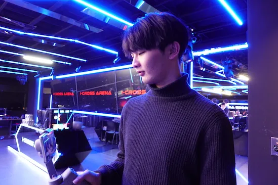

役職
イベント運営
ABOUT
山田 大河
Yamada Taiga
岩崎学園情報科学専門学校 Web技術科
2023-04 岩崎学園情報科学専門学校 入学
2025-05 岩崎学園情報科学専門学校 卒業見込み
情報科学専門学校では、Web制作・解析・動画、画像編集などについて学ぶ。
イベント企画・運営を行うサークルを設立し、代表として活動するとともに、
デザイン作成・学校イベントの代表を務めるなど、多岐にわたる活動を行っている。
HTML
CSS
JavaScript
PHP
Python
Illustrator
2023-07 情報活用試験３級 合格
2023-09 Webクリエイター能力試験スタンダード(HTML5) 合格
2023-09 情報活用試験２級 合格
2023-11 ITパスポート試験 合格
WORKS
いろゆる交流会
いろゆる交流会
役職
イベント運営
担当
案内表作成 / 当日案内
新入生と学内特待生の学内交流イベントに参加いたしました。
私は当日までの案内用ポスター及び当日の案内表を作成いたしました。
エリア別にどなたが参加しているのか、どのエリアでどんな話を聞くことができるかなどを色ごとに分けることで一目でわかるように工夫しました。
架空会社デザイン作成
架空会社デザイン作成
役職
なし
担当
デザイン作成
架空会社を用いて、ロゴ・名刺・バナー作成を行いました。
自然をコンセプトにしている会社ということを前提として、色合いやロゴの形を自然がイメージできるようにしました。
Tシャツデザイン
Tシャツデザイン
役職
なし
担当
デザイン作成
Tシャツのデザイン作成を行いました。
コンセプトを「インク」と「芸術」という2つに設定し制作をしました。
インクという点では飛び散ったインクをIllustratorを用いて1から作成し、様々は色と大きさ、形を散らばせることで芸術という点を表現しました。
ポストカード作成
ポストカード作成
役職
なし
担当
デザイン作成
架空イベントを作成し、そのイベントの招待ポストカードを作成しました。
イベントを自然豊かな環境での開催をイメージし、作成を行いました。
そのため、自然を連想することができる緑をイメージカラーにおき、際立たせるものとして、花束の画像を挿入しました。
eスポーツトークショー
eスポーツトークショー
役職
学生ボランティア
担当
スイッチャー / スライド操作 / 会場案内
高校生向けトークイベントのボランティアに参加しました。
イベント内でのスライド操作、スイッチャーによる画面切り替え、高校生への会場案内を行いました。
どのタイミングで画面操作などを行えば一番良い見え方になるのかを一番に考えイベントに臨み、結果成功を納めることが出来ました。
※企画の関係で写真や台本を載せることができません。
横浜銀行アイディアソン
横浜銀行アイディアソン
役職
発表者 / スライド作成者
担当
プレゼン発表 / スライド作成
横浜銀行様とのアイディアソンを行い、優勝することができました。
「横浜銀行様のアプリ利用者増加に向けたキャンペーン」という課題に対して、
BtoBの視点から課題解決に向けた提案をすることができていたのではないかと思っています。
スライドの作成においては「見やすさ」という点に注意をして作成を行いました。
特に改善策やその過程においての票を作成するにあたって、
どの段階が同じなのかを背景色を変えることで一度見ただけでわかるようにしました。
ISC放送部
ISC放送部
役職
運営
担当
演者説明 / 台本作成
「本校の魅力を伝える」のをコンセプトに行っている配信企画に参加しました。
当企画では視聴者に向けた告知文の作成などのプロモーションにかかわる担当と、当日の演者に向けた台本作成を行いました。
担当したどちらも初めての経験だったので、1から勉強しつつでしたが、結果として同時視聴者数数10人を達成することができ、成功を収めることができたと思います。
※企画の関係で写真や台本を載せることができません。
e-sportsボランティア
e-sportsボランティア
役職
ボランティア
担当
会場案内 / 会場整備
プロゲーミングチーム「DONUTS VARREL」様主催イベントのボランティアに参加しました。
学内では何度かイベントを主催することはありましたが、外部イベントに運営として参加することは初めてでした。
外部イベントを主催するにあたっての温度感や、作業内容、連絡手段などを知ることができたのは私にとって貴重な体験になりました。
CONTACT
お問い合わせは下記メールアドレスにお願いします。
cdyt1230247@gn.iwasaki.ac.jp